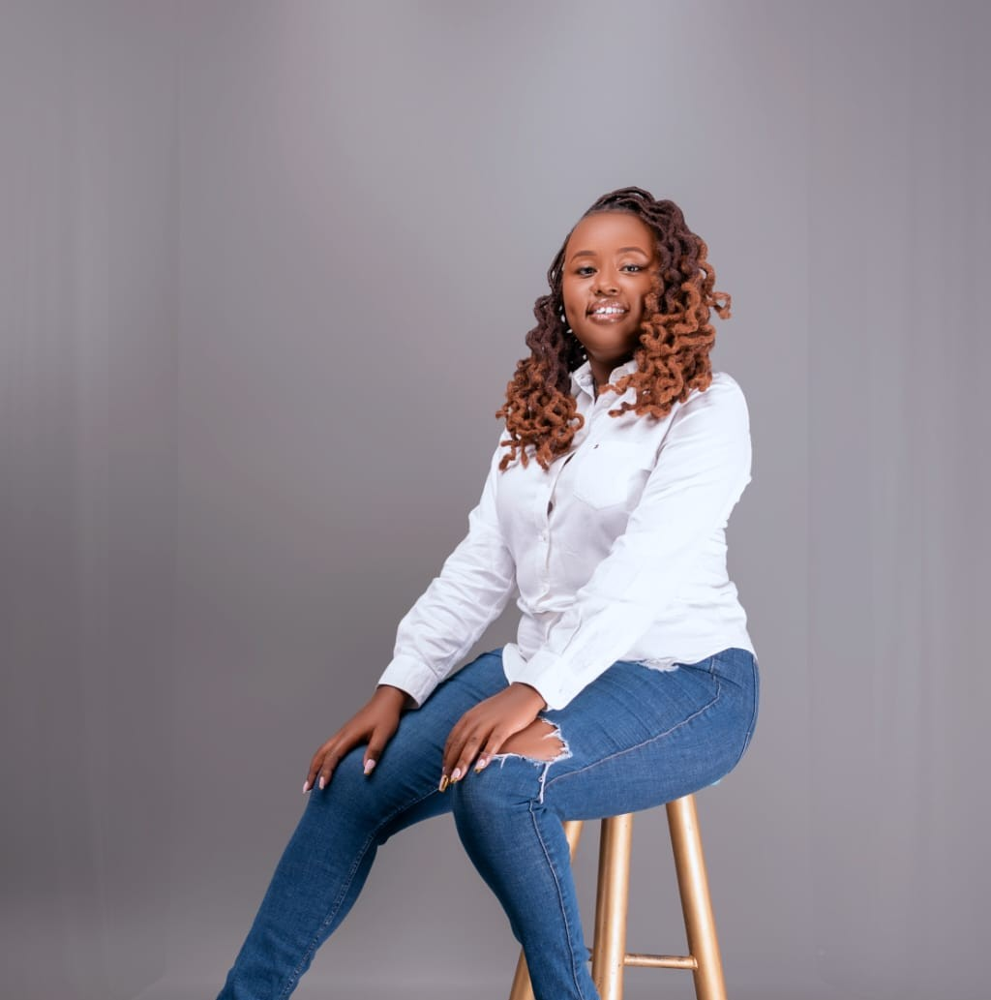

Hi, I'm Phileria Nerima
Customer Experience and Executive Operations Professional
I am a dynamic and results-driven Customer Experience and Executive Operations professional with over four years of proven success in telecommunications and customer service management. My career bridges the fast-paced corporate structure of Telkom Kenya and the precision-driven, global operational environment of Athena, giving me a unique ability to blend strategy, empathy, and execution excellence.
